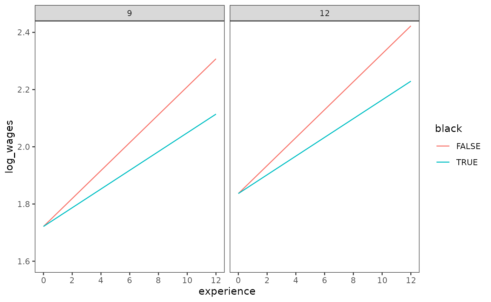
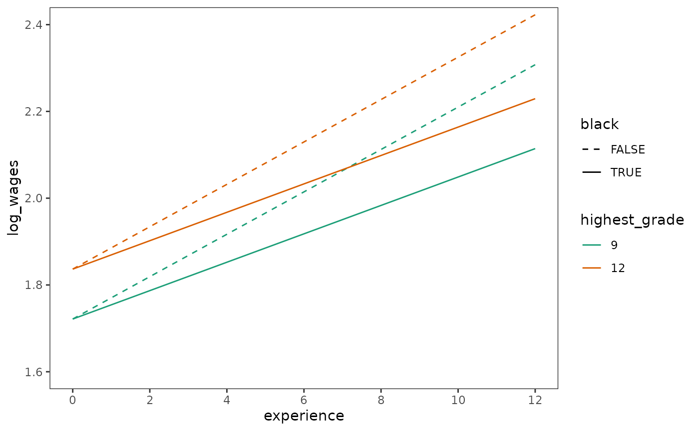
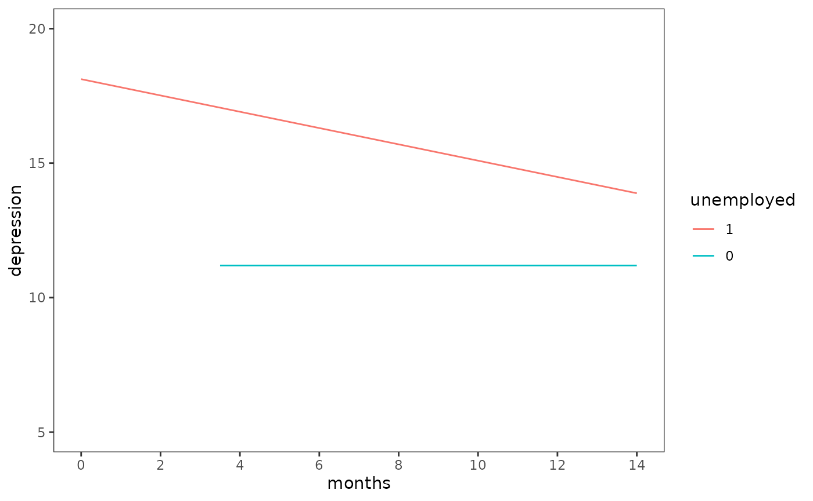

This chapter is under construction.
library(alda)
library(dplyr)
#>
#> Attaching package: 'dplyr'
#> The following objects are masked from 'package:stats':
#>
#> filter, lag
#> The following objects are masked from 'package:base':
#>
#> intersect, setdiff, setequal, union
library(tidyr)
library(purrr)
library(ggplot2)
library(lme4)
#> Loading required package: Matrix
#>
#> Attaching package: 'Matrix'
#> The following objects are masked from 'package:tidyr':
#>
#> expand, pack, unpack5.1 Variably Spaced Measurement Occasions
Table 5.1, page 141:
reading_scores
#> # A tibble: 267 × 5
#> id wave age_group age reading_score
#> <fct> <dbl> <dbl> <dbl> <dbl>
#> 1 1 1 6.5 6 18
#> 2 1 2 8.5 8.33 35
#> 3 1 3 10.5 10.3 59
#> 4 2 1 6.5 6 18
#> 5 2 2 8.5 8.5 25
#> 6 2 3 10.5 10.6 28
#> 7 3 1 6.5 6.08 18
#> 8 3 2 8.5 8.42 23
#> 9 3 3 10.5 10.4 32
#> 10 4 1 6.5 6 18
#> # ℹ 257 more rowsFigure 5.1, page 143:
reading_scores |>
filter(id %in% c(4, 27, 31, 33, 41, 49, 69, 77, 87)) |>
pivot_longer(
starts_with("age"), names_to = "time_structure", values_to = "time"
) |>
ggplot(aes(x = time, y = reading_score, colour = time_structure)) +
geom_point(alpha = .5) +
stat_smooth(method = "lm", se = FALSE, linewidth = .5) +
scale_x_continuous(breaks = 5:12) +
coord_cartesian(xlim = c(5, 12), ylim = c(0, 80)) +
facet_wrap(vars(id))
#> `geom_smooth()` using formula = 'y ~ x'
Table 5.2, page 145:
age_group_fit <- lmer(
reading_score ~ I(age_group - 6.5) + (1 + I(age_group - 6.5) | id),
data = reading_scores,
REML = FALSE
)
age_fit <- lmer(
reading_score ~ I(age - 6.5) + (1 + I(age - 6.5) | id),
data = reading_scores,
REML = FALSE
)
summary(age_group_fit)
#> Linear mixed model fit by maximum likelihood ['lmerMod']
#> Formula: reading_score ~ I(age_group - 6.5) + (1 + I(age_group - 6.5) |
#> id)
#> Data: reading_scores
#>
#> AIC BIC logLik deviance df.resid
#> 1831.9 1853.5 -910.0 1819.9 261
#>
#> Scaled residuals:
#> Min 1Q Median 3Q Max
#> -2.6585 -0.5419 -0.1434 0.3872 3.3133
#>
#> Random effects:
#> Groups Name Variance Std.Dev. Corr
#> id (Intercept) 11.046 3.324
#> I(age_group - 6.5) 4.397 2.097 0.24
#> Residual 27.043 5.200
#> Number of obs: 267, groups: id, 89
#>
#> Fixed effects:
#> Estimate Std. Error t value
#> (Intercept) 21.1629 0.6143 34.45
#> I(age_group - 6.5) 5.0309 0.2956 17.02
#>
#> Correlation of Fixed Effects:
#> (Intr)
#> I(g_gr-6.5) -0.316
summary(age_fit)
#> Linear mixed model fit by maximum likelihood ['lmerMod']
#> Formula: reading_score ~ I(age - 6.5) + (1 + I(age - 6.5) | id)
#> Data: reading_scores
#>
#> AIC BIC logLik deviance df.resid
#> 1815.9 1837.4 -901.9 1803.9 261
#>
#> Scaled residuals:
#> Min 1Q Median 3Q Max
#> -3.0068 -0.4949 -0.1370 0.4096 3.7274
#>
#> Random effects:
#> Groups Name Variance Std.Dev. Corr
#> id (Intercept) 5.107 2.260
#> I(age - 6.5) 3.301 1.817 0.58
#> Residual 27.447 5.239
#> Number of obs: 267, groups: id, 89
#>
#> Fixed effects:
#> Estimate Std. Error t value
#> (Intercept) 21.0608 0.5593 37.66
#> I(age - 6.5) 4.5400 0.2606 17.42
#>
#> Correlation of Fixed Effects:
#> (Intr)
#> I(age-6.5) -0.2875.2 Varying Numbers of Measurement Occasions
Table 5.3, page 147:
dropout_wages |>
filter(id %in% c(206, 332, 1028)) |>
select(id, experience, log_wages, black, highest_grade, unemployment_rate)
#> # A tibble: 20 × 6
#> id experience log_wages black highest_grade unemployment_rate
#> <fct> <dbl> <dbl> <dbl> <dbl> <dbl>
#> 1 206 1.87 2.03 0 10 9.2
#> 2 206 2.81 2.30 0 10 11
#> 3 206 4.31 2.48 0 10 6.30
#> 4 332 0.125 1.63 0 8 7.1
#> 5 332 1.62 1.48 0 8 9.6
#> 6 332 2.41 1.80 0 8 7.2
#> 7 332 3.39 1.44 0 8 6.20
#> 8 332 4.47 1.75 0 8 5.60
#> 9 332 5.18 1.53 0 8 4.60
#> 10 332 6.08 2.04 0 8 4.30
#> 11 332 7.04 2.18 0 8 3.40
#> 12 332 8.20 2.19 0 8 4.39
#> 13 332 9.09 4.04 0 8 6.70
#> 14 1028 0.004 0.872 1 8 9.3
#> 15 1028 0.035 0.903 1 8 7.4
#> 16 1028 0.515 1.39 1 8 7.3
#> 17 1028 1.48 2.32 1 8 7.4
#> 18 1028 2.14 1.48 1 8 6.30
#> 19 1028 3.16 1.70 1 8 5.90
#> 20 1028 4.10 2.34 1 8 6.9Table 5.4, page 149:
wages_fit_A <- lmer(
log_wages ~ experience + (1 + experience | id),
data = dropout_wages,
REML = FALSE
)
summary(wages_fit_A)
#> Linear mixed model fit by maximum likelihood ['lmerMod']
#> Formula: log_wages ~ experience + (1 + experience | id)
#> Data: dropout_wages
#>
#> AIC BIC logLik deviance df.resid
#> 4933.4 4974.0 -2460.7 4921.4 6396
#>
#> Scaled residuals:
#> Min 1Q Median 3Q Max
#> -4.2011 -0.5207 -0.0316 0.4406 7.0370
#>
#> Random effects:
#> Groups Name Variance Std.Dev. Corr
#> id (Intercept) 0.054268 0.23296
#> experience 0.001726 0.04154 -0.30
#> Residual 0.095105 0.30839
#> Number of obs: 6402, groups: id, 888
#>
#> Fixed effects:
#> Estimate Std. Error t value
#> (Intercept) 1.715604 0.010797 158.90
#> experience 0.045681 0.002342 19.51
#>
#> Correlation of Fixed Effects:
#> (Intr)
#> experience -0.565
# Adding new predictors to Model A
wages_fit_B <- update(
wages_fit_A,
. ~ . + experience * I(highest_grade - 9) + experience * black
)
summary(wages_fit_B)
#> Linear mixed model fit by maximum likelihood ['lmerMod']
#> Formula: log_wages ~ experience + (1 + experience | id) + I(highest_grade -
#> 9) + black + experience:I(highest_grade - 9) + experience:black
#> Data: dropout_wages
#>
#> AIC BIC logLik deviance df.resid
#> 4893.8 4961.4 -2436.9 4873.8 6392
#>
#> Scaled residuals:
#> Min 1Q Median 3Q Max
#> -4.2691 -0.5181 -0.0335 0.4452 7.0194
#>
#> Random effects:
#> Groups Name Variance Std.Dev. Corr
#> id (Intercept) 0.051746 0.22748
#> experience 0.001636 0.04045 -0.31
#> Residual 0.095194 0.30854
#> Number of obs: 6402, groups: id, 888
#>
#> Fixed effects:
#> Estimate Std. Error t value
#> (Intercept) 1.717138 0.012542 136.908
#> experience 0.049343 0.002632 18.749
#> I(highest_grade - 9) 0.034920 0.007881 4.431
#> black 0.015395 0.023926 0.643
#> experience:I(highest_grade - 9) 0.001279 0.001723 0.742
#> experience:black -0.018213 0.005499 -3.312
#>
#> Correlation of Fixed Effects:
#> (Intr) exprnc I(_-9) black e:I(-9
#> experience -0.575
#> I(hghst_-9) 0.071 -0.020
#> black -0.523 0.301 -0.020
#> expr:I(_-9) -0.019 -0.003 -0.578 0.011
#> exprnc:blck 0.275 -0.478 0.011 -0.573 -0.023
# Removing predictors from Model B
wages_fit_C <- update(
wages_fit_B,
. ~ . - experience:I(highest_grade - 9) - black,
# The model fails to converge with the default optimizer (although the
# estimates are fine). Changing the optimizer achieves convergence.
control = lmerControl(optimizer = "bobyqa")
)
summary(wages_fit_C)
#> Linear mixed model fit by maximum likelihood ['lmerMod']
#> Formula: log_wages ~ experience + (1 + experience | id) + I(highest_grade -
#> 9) + experience:black
#> Data: dropout_wages
#> Control: lmerControl(optimizer = "bobyqa")
#>
#> AIC BIC logLik deviance df.resid
#> 4890.7 4944.8 -2437.4 4874.7 6394
#>
#> Scaled residuals:
#> Min 1Q Median 3Q Max
#> -4.2788 -0.5183 -0.0347 0.4426 7.0170
#>
#> Random effects:
#> Groups Name Variance Std.Dev. Corr
#> id (Intercept) 0.051831 0.22766
#> experience 0.001647 0.04058 -0.31
#> Residual 0.095174 0.30850
#> Number of obs: 6402, groups: id, 888
#>
#> Fixed effects:
#> Estimate Std. Error t value
#> (Intercept) 1.721475 0.010697 160.929
#> experience 0.048847 0.002513 19.435
#> I(highest_grade - 9) 0.038361 0.006433 5.963
#> experience:black -0.016115 0.004511 -3.572
#>
#> Correlation of Fixed Effects:
#> (Intr) exprnc I(_-9)
#> experience -0.515
#> I(hghst_-9) 0.077 -0.023
#> exprnc:blck -0.036 -0.391 -0.015Figure 5.2, page 150:
prototypical_dropouts <- crossing(
experience = c(0, 12),
highest_grade = c(0, 3) + 9,
black = c(FALSE, TRUE)
)
prototypical_dropout_scores <- tibble(
log_wages = predict(
wages_fit_C,
prototypical_dropouts,
re.form = NA
)
)
prototypical_dropouts |>
bind_cols(prototypical_dropout_scores) |>
ggplot(aes(x = experience, y = log_wages, colour = black)) +
geom_line() +
scale_x_continuous(breaks = seq(0, 12, by = 2)) +
coord_cartesian(ylim = c(1.6, 2.4)) +
facet_wrap(vars(highest_grade))
Table 5.5, page 154:
wages_fit_A_subset <- update(
wages_fit_C,
data = dropout_wages_subset
)
#> boundary (singular) fit: see help('isSingular')
summary(wages_fit_A_subset)
#> Linear mixed model fit by maximum likelihood ['lmerMod']
#> Formula: log_wages ~ experience + (1 + experience | id) + I(highest_grade -
#> 9) + experience:black
#> Data: dropout_wages_subset
#> Control: lmerControl(optimizer = "bobyqa")
#>
#> AIC BIC logLik deviance df.resid
#> 299.9 328.3 -141.9 283.9 249
#>
#> Scaled residuals:
#> Min 1Q Median 3Q Max
#> -2.4109 -0.4754 -0.0290 0.4243 4.2842
#>
#> Random effects:
#> Groups Name Variance Std.Dev. Corr
#> id (Intercept) 8.215e-02 0.286615
#> experience 3.526e-06 0.001878 1.00
#> Residual 1.150e-01 0.339068
#> Number of obs: 257, groups: id, 124
#>
#> Fixed effects:
#> Estimate Std. Error t value
#> (Intercept) 1.73734 0.04760 36.499
#> experience 0.05161 0.02108 2.449
#> I(highest_grade - 9) 0.04610 0.02447 1.884
#> experience:black -0.05968 0.03477 -1.716
#>
#> Correlation of Fixed Effects:
#> (Intr) exprnc I(_-9)
#> experience -0.612
#> I(hghst_-9) 0.051 -0.133
#> exprnc:blck -0.129 -0.297 0.023
#> optimizer (bobyqa) convergence code: 0 (OK)
#> boundary (singular) fit: see help('isSingular')
# {lme4} does not support the removal of boundary constraints to allow for
# negative variance components, so Model B cannot be replicated.
# Remove varying slope for experience
wages_fit_C_subset <- update(
wages_fit_A_subset,
. ~ . - (1 + experience | id) + (1 | id)
)
summary(wages_fit_C_subset)
#> Linear mixed model fit by maximum likelihood ['lmerMod']
#> Formula:
#> log_wages ~ experience + I(highest_grade - 9) + (1 | id) + experience:black
#> Data: dropout_wages_subset
#> Control: lmerControl(optimizer = "bobyqa")
#>
#> AIC BIC logLik deviance df.resid
#> 295.9 317.2 -141.9 283.9 251
#>
#> Scaled residuals:
#> Min 1Q Median 3Q Max
#> -2.4202 -0.4722 -0.0290 0.4197 4.2439
#>
#> Random effects:
#> Groups Name Variance Std.Dev.
#> id (Intercept) 0.08425 0.2903
#> Residual 0.11480 0.3388
#> Number of obs: 257, groups: id, 124
#>
#> Fixed effects:
#> Estimate Std. Error t value
#> (Intercept) 1.73734 0.04775 36.383
#> experience 0.05178 0.02093 2.474
#> I(highest_grade - 9) 0.04576 0.02450 1.868
#> experience:black -0.06007 0.03458 -1.737
#>
#> Correlation of Fixed Effects:
#> (Intr) exprnc I(_-9)
#> experience -0.614
#> I(hghst_-9) 0.051 -0.135
#> exprnc:blck -0.130 -0.294 0.0245.3 Time-Varying Predictors
Table 5.6, page 161:
filter(depression_unemployment, id %in% c(7589, 55697, 67641, 65441, 53782))
#> # A tibble: 14 × 4
#> id months depression unemployed
#> <fct> <dbl> <dbl> <dbl>
#> 1 7589 1.31 36 1
#> 2 7589 5.09 40 1
#> 3 7589 11.8 39 1
#> 4 53782 0.427 22 1
#> 5 53782 4.24 15 0
#> 6 53782 11.1 21 1
#> 7 55697 1.35 7 1
#> 8 55697 5.78 4 1
#> 9 65441 1.08 27 1
#> 10 65441 4.70 15 1
#> 11 65441 11.3 7 0
#> 12 67641 0.329 32 1
#> 13 67641 4.11 9 0
#> 14 67641 10.9 10 0Table 5.7, page 163:
unemployment_fit_A <- lmer(
depression ~ months + (1 + months | id),
data = depression_unemployment,
REML = FALSE
)
summary(unemployment_fit_A)
#> Linear mixed model fit by maximum likelihood ['lmerMod']
#> Formula: depression ~ months + (1 + months | id)
#> Data: depression_unemployment
#>
#> AIC BIC logLik deviance df.resid
#> 5145.1 5172.2 -2566.6 5133.1 668
#>
#> Scaled residuals:
#> Min 1Q Median 3Q Max
#> -1.9979 -0.5415 -0.1608 0.4454 3.5520
#>
#> Random effects:
#> Groups Name Variance Std.Dev. Corr
#> id (Intercept) 86.8520 9.3194
#> months 0.3551 0.5959 -0.55
#> Residual 68.8475 8.2974
#> Number of obs: 674, groups: id, 254
#>
#> Fixed effects:
#> Estimate Std. Error t value
#> (Intercept) 17.66937 0.77557 22.783
#> months -0.42199 0.08298 -5.086
#>
#> Correlation of Fixed Effects:
#> (Intr)
#> months -0.632
# Adding a predictor to Model A
unemployment_fit_B <- update(
unemployment_fit_A,
. ~ . + unemployed,
# The model fails to converge with the default optimizer (although the
# estimates are fine). Changing the optimizer achieves convergence.
control = lmerControl(optimizer = "bobyqa")
)
summary(unemployment_fit_B)
#> Linear mixed model fit by maximum likelihood ['lmerMod']
#> Formula: depression ~ months + (1 + months | id) + unemployed
#> Data: depression_unemployment
#> Control: lmerControl(optimizer = "bobyqa")
#>
#> AIC BIC logLik deviance df.resid
#> 5121.6 5153.2 -2553.8 5107.6 667
#>
#> Scaled residuals:
#> Min 1Q Median 3Q Max
#> -1.9610 -0.5357 -0.1192 0.4303 3.6857
#>
#> Random effects:
#> Groups Name Variance Std.Dev. Corr
#> id (Intercept) 93.5189 9.6705
#> months 0.4647 0.6817 -0.59
#> Residual 62.3875 7.8986
#> Number of obs: 674, groups: id, 254
#>
#> Fixed effects:
#> Estimate Std. Error t value
#> (Intercept) 12.66559 1.24207 10.197
#> months -0.20198 0.09332 -2.165
#> unemployed 5.11131 0.98884 5.169
#>
#> Correlation of Fixed Effects:
#> (Intr) months
#> months -0.715
#> unemployed -0.780 0.459
# Adding an interaction term to Model B
unemployment_fit_C <- update(
unemployment_fit_B,
. ~ . + months:unemployed
)
summary(unemployment_fit_C)
#> Linear mixed model fit by maximum likelihood ['lmerMod']
#> Formula:
#> depression ~ months + (1 + months | id) + unemployed + months:unemployed
#> Data: depression_unemployment
#> Control: lmerControl(optimizer = "bobyqa")
#>
#> AIC BIC logLik deviance df.resid
#> 5119.0 5155.2 -2551.5 5103.0 666
#>
#> Scaled residuals:
#> Min 1Q Median 3Q Max
#> -2.0039 -0.5237 -0.1548 0.4309 3.6961
#>
#> Random effects:
#> Groups Name Variance Std.Dev. Corr
#> id (Intercept) 93.7133 9.6806
#> months 0.4512 0.6717 -0.60
#> Residual 62.0311 7.8760
#> Number of obs: 674, groups: id, 254
#>
#> Fixed effects:
#> Estimate Std. Error t value
#> (Intercept) 9.6167 1.8893 5.090
#> months 0.1620 0.1937 0.837
#> unemployed 8.5291 1.8779 4.542
#> months:unemployed -0.4652 0.2172 -2.142
#>
#> Correlation of Fixed Effects:
#> (Intr) months unmply
#> months -0.888
#> unemployed -0.911 0.863
#> mnths:nmply 0.755 -0.878 -0.852
# Note: The original model was fit in SAS, which does not report any issues with
# the model given the data; however, other programs (MPlus, SPSS, STATA, R) all
# have convergence/singularity problems and it is not possible to get results
# that match the textbook. Each of these programs react differently to this
# situation, but it is reasonable to conclude the problem is not with the
# software, but with this model given the data.
unemployment_fit_D <- lmer(
depression ~
unemployed + months:unemployed + (1 + unemployed + months:unemployed | id),
data = depression_unemployment,
REML = FALSE,
control = lmerControl(
# The number of observations is less than the number of random effects
# levels for each term, which makes the random effects variances unidentifiable
# in this model, and ignoring this (as we do here) results in a singular fit.
check.nobs.vs.nRE = "ignore"
)
)
#> boundary (singular) fit: see help('isSingular')
summary(unemployment_fit_D)
#> Linear mixed model fit by maximum likelihood ['lmerMod']
#> Formula: depression ~ unemployed + months:unemployed + (1 + unemployed +
#> months:unemployed | id)
#> Data: depression_unemployment
#> Control: lmerControl(check.nobs.vs.nRE = "ignore")
#>
#> AIC BIC logLik deviance df.resid
#> 5115.3 5160.4 -2547.6 5095.3 664
#>
#> Scaled residuals:
#> Min 1Q Median 3Q Max
#> -2.1294 -0.4921 -0.1555 0.4258 3.7778
#>
#> Random effects:
#> Groups Name Variance Std.Dev. Corr
#> id (Intercept) 45.2572 6.727
#> unemployed 44.9693 6.706 0.14
#> unemployed:months 0.7534 0.868 0.11 -0.97
#> Residual 59.0189 7.682
#> Number of obs: 674, groups: id, 254
#>
#> Fixed effects:
#> Estimate Std. Error t value
#> (Intercept) 11.1949 0.7899 14.172
#> unemployed 6.9272 0.9300 7.448
#> unemployed:months -0.3030 0.1121 -2.703
#>
#> Correlation of Fixed Effects:
#> (Intr) unmply
#> unemployed -0.563
#> unmplyd:mnt -0.074 -0.443
#> optimizer (nloptwrap) convergence code: 0 (OK)
#> boundary (singular) fit: see help('isSingular')Figure 5.4, page 167:
unemployment_fit_predictions <- tibble(
unemployed = c(0, 0, 1, 1), months = c(3.5, 14, 0, 14)
)
map(
list(
model_B = unemployment_fit_B,
model_C = unemployment_fit_C,
model_D = unemployment_fit_D
),
function(.x) {
unemployment_fit_predictions |>
mutate(
depression = predict(.x, unemployment_fit_predictions, re.form = NA),
unemployed = factor(unemployed, levels = c(1, 0))
) |>
ggplot(aes(x = months, y = depression, colour = unemployed)) +
geom_line() +
scale_x_continuous(breaks = seq(0, 14, by = 2)) +
coord_cartesian(xlim = c(0, 14), ylim = c(5, 20))
}
)
#> $model_B
#>
#> $model_C
#>
#> $model_D
Table 5.8:
5.4 Recentering the Effect of TIME
Table 5.9, page 182:
antidepressants |>
select(-c(id, positive_mood, treatment)) |>
mutate(time_3.33 = time - 3.33, time_6.67 = time - 6.67)
#> # A tibble: 1,242 × 7
#> wave day reading time_of_day time time_3.33 time_6.67
#> <dbl> <dbl> <chr> <dbl> <dbl> <dbl> <dbl>
#> 1 1 0 8 AM 0 0 -3.33 -6.67
#> 2 2 0 3 PM 0.333 0.333 -3.00 -6.34
#> 3 3 0 10 PM 0.667 0.667 -2.66 -6.00
#> 4 4 1 8 AM 0 1 -2.33 -5.67
#> 5 5 1 3 PM 0.333 1.33 -2.00 -5.34
#> 6 6 1 10 PM 0.667 1.67 -1.66 -5.00
#> 7 7 2 8 AM 0 2 -1.33 -4.67
#> 8 8 2 3 PM 0.333 2.33 -0.997 -4.34
#> 9 9 2 10 PM 0.667 2.67 -0.663 -4.00
#> 10 10 3 8 AM 0 3 -0.33 -3.67
#> # ℹ 1,232 more rowsTable 5.10, page 184:
antidepressants_fit_A <- lmer(
positive_mood ~ treatment * time + (1 + time | id),
data = antidepressants,
REML = FALSE
)
summary(antidepressants_fit_A)
#> Linear mixed model fit by maximum likelihood ['lmerMod']
#> Formula: positive_mood ~ treatment * time + (1 + time | id)
#> Data: antidepressants
#>
#> AIC BIC logLik deviance df.resid
#> 12696.5 12737.4 -6340.2 12680.5 1234
#>
#> Scaled residuals:
#> Min 1Q Median 3Q Max
#> -3.2709 -0.4899 -0.1175 0.4241 5.6180
#>
#> Random effects:
#> Groups Name Variance Std.Dev. Corr
#> id (Intercept) 2111.54 45.951
#> time 63.74 7.984 -0.33
#> Residual 1229.93 35.070
#> Number of obs: 1242, groups: id, 64
#>
#> Fixed effects:
#> Estimate Std. Error t value
#> (Intercept) 167.463 9.327 17.956
#> treatment -3.109 12.333 -0.252
#> time -2.418 1.731 -1.397
#> treatment:time 5.537 2.278 2.431
#>
#> Correlation of Fixed Effects:
#> (Intr) trtmnt time
#> treatment -0.756
#> time -0.404 0.305
#> treatmnt:tm 0.307 -0.408 -0.760
antidepressants_fit_B <- lmer(
positive_mood ~ treatment * I(time - 3.33) + (1 + I(time - 3.33) | id),
data = antidepressants,
REML = FALSE,
control = lmerControl(optimizer = "bobyqa")
)
summary(antidepressants_fit_B)
#> Linear mixed model fit by maximum likelihood ['lmerMod']
#> Formula: positive_mood ~ treatment * I(time - 3.33) + (1 + I(time - 3.33) |
#> id)
#> Data: antidepressants
#> Control: lmerControl(optimizer = "bobyqa")
#>
#> AIC BIC logLik deviance df.resid
#> 12696.5 12737.4 -6340.2 12680.5 1234
#>
#> Scaled residuals:
#> Min 1Q Median 3Q Max
#> -3.2709 -0.4899 -0.1175 0.4241 5.6180
#>
#> Random effects:
#> Groups Name Variance Std.Dev. Corr
#> id (Intercept) 2008.16 44.812
#> I(time - 3.33) 63.74 7.983 0.25
#> Residual 1229.93 35.070
#> Number of obs: 1242, groups: id, 64
#>
#> Fixed effects:
#> Estimate Std. Error t value
#> (Intercept) 159.411 8.763 18.191
#> treatment 15.328 11.543 1.328
#> I(time - 3.33) -2.418 1.731 -1.397
#> treatment:I(time - 3.33) 5.537 2.278 2.431
#>
#> Correlation of Fixed Effects:
#> (Intr) trtmnt I(-3.3
#> treatment -0.759
#> I(tim-3.33) 0.228 -0.173
#> tr:I(-3.33) -0.173 0.221 -0.760
antidepressants_fit_C <- lmer(
positive_mood ~ treatment * I(time - 6.67) + (1 + I(time - 6.67) | id),
data = antidepressants,
REML = FALSE
)
summary(antidepressants_fit_C)
#> Linear mixed model fit by maximum likelihood ['lmerMod']
#> Formula: positive_mood ~ treatment * I(time - 6.67) + (1 + I(time - 6.67) |
#> id)
#> Data: antidepressants
#>
#> AIC BIC logLik deviance df.resid
#> 12696.5 12737.4 -6340.2 12680.5 1234
#>
#> Scaled residuals:
#> Min 1Q Median 3Q Max
#> -3.2709 -0.4899 -0.1175 0.4241 5.6180
#>
#> Random effects:
#> Groups Name Variance Std.Dev. Corr
#> id (Intercept) 3324.50 57.658
#> I(time - 6.67) 63.73 7.983 0.66
#> Residual 1229.93 35.070
#> Number of obs: 1242, groups: id, 64
#>
#> Fixed effects:
#> Estimate Std. Error t value
#> (Intercept) 151.335 11.546 13.107
#> treatment 33.821 15.163 2.230
#> I(time - 6.67) -2.418 1.731 -1.397
#> treatment:I(time - 6.67) 5.537 2.278 2.431
#>
#> Correlation of Fixed Effects:
#> (Intr) trtmnt I(-6.6
#> treatment -0.761
#> I(tim-6.67) 0.674 -0.513
#> tr:I(-6.67) -0.512 0.670 -0.760Figure 5.5, page 185:
antidepressants_fit_predictions <- tibble(
treatment = c(0, 0, 1, 1), time = c(0, 7, 0, 7)
)
antidepressants_fit_predictions |>
mutate(
positive_mood = predict(
antidepressants_fit_C, antidepressants_fit_predictions, re.form = NA
),
treatment = factor(treatment, levels = c(1, 0))
) |>
ggplot(aes(x = time, y = positive_mood, colour = treatment)) +
geom_line() +
scale_x_continuous(breaks = seq(0, 7, by = 1)) +
coord_cartesian(ylim = c(140, 190))